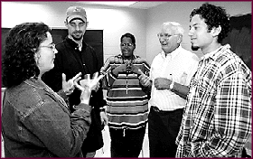

(The image above was from http://134.231.4.33/~gtweb/win96-97/honors.html (Gallaudet Today), but this page is no longer extant.
There is a famous joke that I will retell here in case you haven't heard it before. If you recognize it, you can skip ahead.
The Russian took out a bottle of the finest, smoothest vodka, took a few swigs, and tossed it out the train window. The other two were perplexed: "How can you throw out such a marvelous vodka?" "Oh don't worry," said the Russian. "We have plenty of 'em where I come from."
The Deaf person continued his conversation for a while through his interpreter until he suddenly turned around and threw the interpreter through the train window. The other two were horrified: "How can you do such a thing to another human being?" they wrote on a piece of paper. "Oh don't worry," the Deaf man wrote back. "We have plenty of 'em where I come from."
Interpreters hate to think so, but we are a "necessary evil". If we are friends of the Deaf and Deaf-Blind community that is ideal, but as working interpreters we remind deaf people of the obstacles that the Hearing community has put up for them. In Sweden, as I understand, the Deaf community picks out who will become interpreters and mentors them as they become more proficient in Deaf culture and Sign Language. I would love to see this in America! I became interested in ASL after seeing an interpreter work during a Christmas concert. At first I was just interested in learning another language; I had dabbled in a few. As I learned more, my Deaf teacher encouraged me to become an interpreter.
I knew that classes alone would never give me the skills I wanted in the language so I associated with members of the Deaf Gay community since I shared something with them. It was very frustrating at first, but it was crucial for my linguistic and cultural development. They asked if I would interpret for a Gay Deaf play and I laughed and said I hadn't even graduated yet. They said not to worry because Hank Stack (who sadly is no longer with us) would be the sign master and I would simply perform his translation. Here I was, working with a brilliant Deaf person who continued to be my friend after the "assignment" and lead me into the Deaf world. My interpreter education program was great, but I would have lost so much if I had not befriended and been befriended by the Deaf community.
The ASL teacher in my program was Anna Maria Rinaldi, who introduced me to the Deaf-Blind world. I volunteered to be an SSP for a group of Deaf-Blind people who were going to Reno, Nevada. Since then I have gone to seven AADB conventions and interpreted weekly for Deaf-Blind people in Seattle, Washington for two years. On average, the relationship between an interpreter and a Deaf-Blind person in general is more "intimate" than between an interpreter and a Deaf person. Interpreters must know where to draw the line to keep from being an enabler to the Deaf-Blind person, which will prevent that person from becoming self-actualized. I do think, however, that Deaf-Blind interpreters have to be "fellow travelers" with the Deaf-Blind community, trying to grow in such a way that Deaf-Blind people will achieve fulfillment in their goals. On the way, we interpreters will become more human and loving people, valuing diversity and seeing the world through new hands.